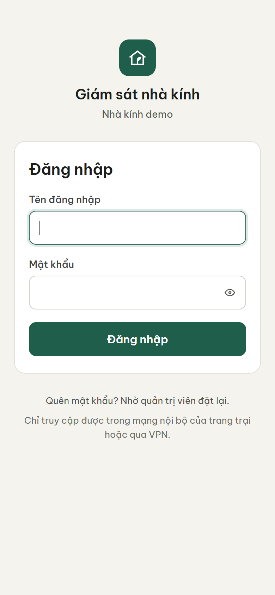
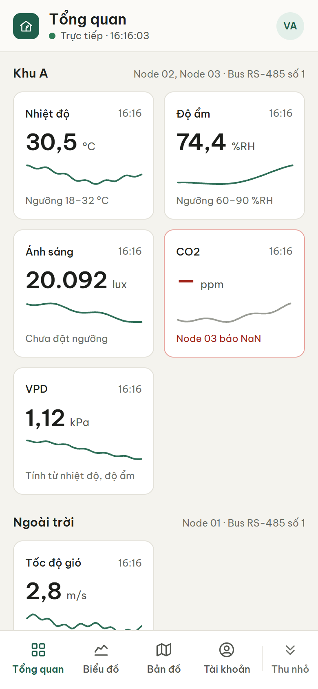
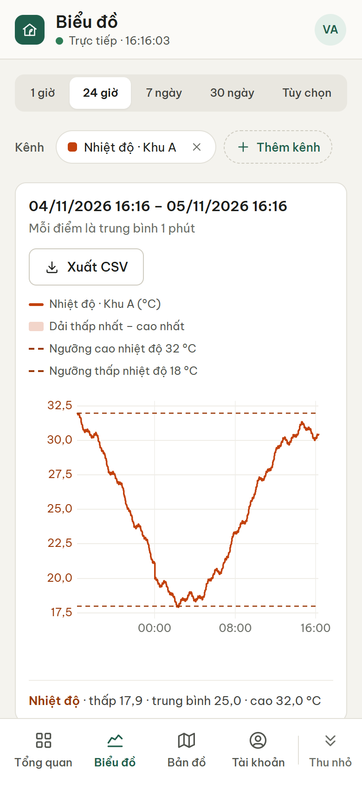
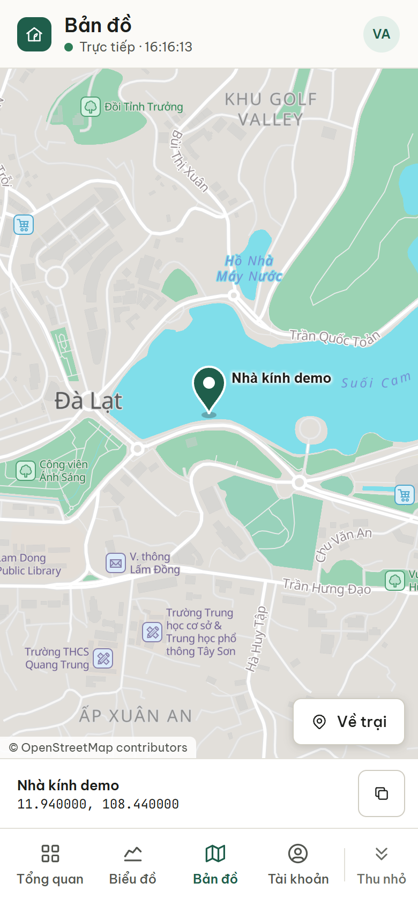
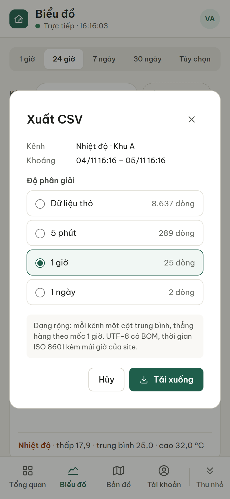
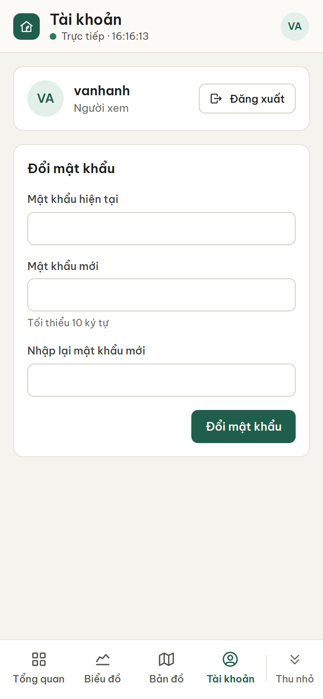

Giám sát nhà kính: xem số liệu trên điện thoại, ở trại và từ xa
Dành cho người xem và quản trị viên · Bản tháng 11/2026 · Ảnh chụp màn hình dùng số liệu mẫu
Thông tin của trại (quản trị viên điền trước khi đưa tài liệu)
Địa chỉ khi ở trạihttps://
Địa chỉ từ xa (Tailscale)https://
Tên đăng nhập của bạn
Người hỗ trợ, số điện thoại
Hệ thống làm gì
Các cảm biến trong nhà kính (nhiệt độ, độ ẩm, ánh sáng, CO2, tốc độ gió...) nối vào một bộ ghi dữ liệu đặt ở trại, gọi là Datalogger. Datalogger đọc số liệu liên tục, lưu lại và hiện lên màn hình đặt ở trại. Bạn cũng xem được trên điện thoại, máy tính bảng hoặc máy tính bằng trình duyệt web, không cần cài ứng dụng riêng của trại.
Có hai cách vào
Khi đang ở trại
Khi ở bất cứ đâu có Internet
Mạng
Wi-Fi của trại
4G hoặc Wi-Fi bất kỳ
Cần cài
Không cần. Lần đầu, nhờ quản trị viên cài chứng chỉ của trại lên máy.
Ứng dụng Tailscale (miễn phí), cài một lần
Địa chỉ
Địa chỉ khi ở trại, hoặc quét mã QR trên màn hình ở trại
Địa chỉ từ xa, kết thúc bằng .ts.net
Xem mục
1
2
Hai địa chỉ mở cùng một trang và cùng số liệu. Đã cài Tailscale thì dùng địa chỉ từ xa ở mọi nơi được, kể cả khi đang ở trại.
Vì sao phải cài Tailscale? Trang giám sát không mở công khai ra Internet. Chỉ những máy đã cài Tailscale và được quản trị viên mời mới tìm thấy trang này. Người lạ không thể dò mật khẩu hay can thiệp vào hệ thống.
1Vào khi đang ở trại
Nối điện thoại vào Wi-Fi của trại.
Quét mã QR trên màn hình theo dõi ở trại (nếu màn hình có ngăn kéo mã QR), hoặc mở trình duyệt (Chrome, Safari) và gõ địa chỉ khi ở trại ghi ở trang đầu.
Nếu trình duyệt báo “Kết nối của bạn không phải là kết nối riêng tư” hoặc chứng chỉ không đáng tin cậy, đừng bấm bỏ qua cảnh báo. Nhờ quản trị viên cài chứng chỉ của trại lên máy (mục 9.4). Mỗi máy chỉ cài một lần.
2Vào từ xa qua Tailscale
Tailscale là ứng dụng miễn phí, tạo một đường kết nối riêng đã mã hóa giữa điện thoại của bạn và Datalogger ở trại. Cài và đăng nhập một lần, sau đó chỉ cần để ứng dụng bật.
Cài ứng dụng. Android: mở CH Play, tìm “Tailscale”. iPhone, iPad: mở App Store, tìm “Tailscale”. Máy tính Windows, macOS: tải ở tailscale.com/download.
Nhận lời mời. Quản trị viên gửi cho bạn một email hoặc một đường link mời. Mở lời mời, đăng nhập bằng tài khoản Google, Apple hoặc Microsoft của bạn rồi bấm chấp nhận (Accept). Chưa có tài khoản Tailscale thì bước này tự tạo.
Đăng nhập ứng dụng. Mở Tailscale trên điện thoại, bấm đăng nhập (Log in) và chọn đúng tài khoản ở bước 2. Khi điện thoại hỏi có cho thêm cấu hình VPN không, chọn Cho phép (Allow).
Bật kết nối. Gạt công tắc trong ứng dụng sang trạng thái đã kết nối (Connected). Datalogger của trại hiện trong danh sách thiết bị.
Mở trang giám sát. Mở trình duyệt, gõ đầy đủ địa chỉ từ xa ghi ở trang đầu, có cả phần đuôi .ts.net. Gõ thiếu phần đuôi thì trang không mở được.
Tailscale chỉ dẫn đường tới Datalogger. Zalo, Facebook và các trang web khác vẫn chạy như bình thường, nên có thể để Tailscale bật luôn.
Khi Internet hoặc điện ở trại bị mất, địa chỉ từ xa không vào được. Lúc đó, nếu đang ở trại, dùng địa chỉ khi ở trại.
Tạo lối tắt trên màn hình chính
Để lần sau mở trang chỉ bằng một chạm:
Android (Chrome): mở trang giám sát, bấm ⋮ ở góc trên bên phải → Thêm vào màn hình chính.
iPhone, iPad (Safari): mở trang giám sát, bấm nút Chia sẻ (ô vuông có mũi tên lên) → Thêm vào MH chính.
3Đăng nhập
Gõ Tên đăng nhập và Mật khẩu quản trị viên đã cấp. Bấm hình con mắt để xem lại mật khẩu đang gõ.
Bấm Đăng nhập.
Lần đầu, bạn đang dùng mật khẩu tạm. Trang tự chuyển sang mục Tài khoản để bạn đặt mật khẩu mới (tối thiểu 10 ký tự) trước khi xem số liệu.
Cần biết
Trang nhớ đăng nhập. Nếu 7 ngày liền không mở thì phải đăng nhập lại.
Mỗi địa chỉ (ở trại, từ xa) đăng nhập riêng một lần.
Nhập sai 5 lần trong 10 phút thì bị tạm khóa đăng nhập 10 phút.
Gõ mật khẩu bằng bộ gõ tiếng Việt (Telex, VNI) có thể làm chữ bị đổi, ví dụ “aa” thành “â”. Nên tắt bộ gõ tiếng Việt khi gõ mật khẩu.
Quên mật khẩu: nhờ quản trị viên đặt lại.

Trang Đăng nhập
4Màn hình Tổng quan
Sau khi đăng nhập, bạn thấy trang Tổng quan với giá trị mới nhất của mọi cảm biến, xếp theo khu vực (ví dụ Khu A, Ngoài trời).
Chấm xanh “Trực tiếp” dưới tiêu đề: số liệu đang tự cập nhật, không cần tải lại trang. Giờ bên cạnh là lần cập nhật gần nhất.
Mỗi thẻ gồm tên số đo và giờ đọc, giá trị kèm đơn vị, một đường nhỏ cho thấy diễn biến gần đây. Dòng cuối thẻ ghi ngưỡng cho phép hoặc tình trạng của thẻ.
Bấm vào một thẻ để mở biểu đồ 24 giờ của số đo đó.
Cuối trang là danh sách thiết bị và số thiết bị đang trực tuyến.
Thanh dưới cùng có các mục Tổng quan, Biểu đồ, Bản đồ, Tài khoản. Bấm Thu nhỏ để thanh gọn lại khi cần thêm chỗ xem.
Thẻ ở ảnh bên cạnh: “CO2” có viền đỏ và dấu “—” vì cảm biến báo lỗi (xem bảng “Đọc tình trạng của thẻ” ngay dưới). Các thẻ khác đang bình thường.

Trang Tổng quan trên điện thoại
Đọc tình trạng của thẻ
Trên điện thoại, mỗi thẻ báo tình trạng bằng màu viền và dòng chữ cuối thẻ. Trên máy tính bảng và máy tính, thẻ rộng hơn nên có thêm nhãn chữ như “Vượt ngưỡng”, “Lỗi cảm biến”, “Mất kết nối”.
Thẻ trông thế nào
Nghĩa là
Bạn nên
Nhiệt độ08:52
25,3°C
Ngưỡng 18–32 °C
Bình thường. Dòng cuối ghi khoảng ngưỡng cho phép, hoặc “Chưa đặt ngưỡng”.
Không cần làm gì.
Nhiệt độ13:40
33,8°C
Trên ngưỡng 32 °C
Vượt ngưỡng. Giá trị cao hơn hoặc thấp hơn khoảng cho phép. Đầu trang còn có thanh cam “… kênh vượt ngưỡng”.
Kiểm tra nhà kính. Bấm Xem diễn biến trên thanh cam để xem biểu đồ.
CO208:52
—ppm
Node 03 báo NaN
Lỗi cảm biến hoặc ngoài phạm vi đo. Thiết bị vẫn trả lời nhưng đầu đo có vấn đề hoặc báo con số vô lý.
Báo quản trị viên.
Tốc độ gió
—m/s
Node 01 không phản hồi
Mất kết nối với thiết bị, thường do mất điện, đứt dây hoặc thiết bị hỏng.
Báo quản trị viên.
Độ ẩm07:15
82,0%RH
Lần cuối 07:15
Dữ liệu cũ. Đã lâu chưa có số mới, số đang hiện là lần đọc cuối.
Chờ vài phút. Kéo dài thì báo quản trị viên.
Ánh sáng
—lux
Thiết bị hoặc kết nối đang tắt
Đang tắt. Quản trị viên đã tắt thiết bị này.
Bình thường nếu quản trị viên chủ động tắt.
Nhiệt độ
Đang chờ dữ liệu
Đang chờ. Datalogger vừa khởi động lại hoặc thiết bị mới được thêm.
Chờ vài phút.
Thanh thông báo ở đầu trang
Thông báo
Nghĩa là, và bạn nên
Mất kết nối trực tiếp tới Datalogger. Đang thử lại…
Điện thoại không nối được tới Datalogger, số trên trang có thể đã cũ. Kiểm tra mạng điện thoại và xem Tailscale còn bật không. Trang tự nối lại khi có mạng.
Collector đang dừng.
Phần đọc cảm biến trên Datalogger đã ngừng, không có số liệu mới. Báo quản trị viên.
Đồng hồ hệ thống chưa đồng bộ…
Đồng hồ của Datalogger chưa lấy được giờ chuẩn, giờ trên số liệu có thể sai. Báo quản trị viên.
5Xem biểu đồ
Mở mục Biểu đồ ở thanh dưới cùng, hoặc bấm vào một thẻ ở Tổng quan.
Chọn khoảng thời gian:1 giờ, 24 giờ, 7 ngày, 30 ngày. Muốn xem một khoảng khác, chọn Tùy chọn, nhập ngày giờ Từ và Đến rồi bấm Áp dụng.
Chọn số đo: bấm + Thêm kênh để vẽ chung tối đa 6 số đo, ví dụ nhiệt độ và độ ẩm để so sánh. Một biểu đồ có tối đa 2 loại đơn vị; số đo không thêm được sẽ có ghi chú lý do trong danh sách. Bấm × trên nhãn để bỏ một số đo.
Đọc biểu đồ
Đường liền: giá trị theo thời gian.
Dải màu nhạt: thấp nhất đến cao nhất trong từng điểm.
Đường nét đứt: ngưỡng cao và ngưỡng thấp.
Dòng ngay dưới khoảng thời gian: mỗi điểm là trung bình bao lâu, ví dụ “Mỗi điểm là trung bình 1 phút”. Khoảng xem càng dài thì mỗi điểm gộp càng nhiều.
Dòng dưới biểu đồ: giá trị thấp nhất, trung bình, cao nhất trong cả khoảng.
Đoạn trống trên đường là lúc không có số liệu, ví dụ mất điện.

Biểu đồ nhiệt độ 24 giờ
6Xem vị trí trại trên bản đồ
Mở mục Bản đồ ở thanh dưới cùng. Trang hiện vị trí của trại và vùng xung quanh.
Ghim xanh: vị trí của trại, kèm tên trại.
Kéo bản đồ để xem xung quanh, chụm hoặc mở hai ngón để thu nhỏ, phóng to. Bấm Về trại để quay lại chỗ ghim.
Dòng dưới bản đồ: tên và tọa độ của trại. Bấm nút sao chép rồi dán vào app bản đồ khác, ví dụ khi cần chỉ đường tới trại.
Bản đồ nằm sẵn trên Datalogger, nên khi đang ở trại vẫn xem được cả lúc mất Internet. Bản đồ chỉ có vùng quanh trại và không tìm được địa chỉ.
Nếu trang báo “Bản đồ trại sẽ có sau khi lắp đặt tại trại”, nghĩa là quản trị viên chưa nhập tọa độ hoặc chưa cài bản đồ. Số liệu và biểu đồ vẫn dùng bình thường.

Trang Bản đồ trên điện thoại
7Tải số liệu về máy (Xuất CSV)
Số liệu tải về là file CSV, mở bằng Excel hoặc Google Sheets để lập bảng, tính toán hay lưu trữ.
Trên trang Biểu đồ, chọn các số đo và khoảng thời gian cần lấy.
Bấm Xuất CSV.
Chọn độ phân giải. Số dòng của từng lựa chọn hiện ngay bên cạnh.
Dữ liệu thô: mỗi lần đọc cảm biến là một dòng. Đầy đủ nhất nhưng file lớn.
5 phút, 1 giờ, 1 ngày: giá trị trung bình theo từng mốc, mỗi số đo một cột. Dễ dùng hơn cho báo cáo.
Bấm Tải xuống. File lưu vào thư mục Tải xuống của máy.
File giữ đúng chữ tiếng Việt khi mở bằng Excel. Thời gian ghi theo giờ của trại (giờ Việt Nam).
Theo mặc định, dữ liệu thô được giữ 365 ngày; dữ liệu trung bình 5 phút được giữ lâu dài. Muốn lấy số liệu cũ hơn 1 năm, chọn 5 phút trở lên.

Hộp thoại Xuất CSV
8Tài khoản và mật khẩu
Mở mục Tài khoản ở thanh dưới cùng.
Đổi mật khẩu
Nhập Mật khẩu hiện tại.
Nhập Mật khẩu mới (tối thiểu 10 ký tự) hai lần.
Bấm Đổi mật khẩu.
Nên chọn một câu dễ nhớ nhưng khó đoán, ví dụ ghép 3, 4 từ không liên quan. Không dùng chung mật khẩu với email hay Facebook.
Đăng xuất
Bấm Đăng xuất khi dùng máy của người khác hoặc máy dùng chung.
Hai loại tài khoản
Người xem: xem Tổng quan, Biểu đồ và xuất CSV.
Quản trị viên: thêm mục Quản trị để cấu hình kết nối, thiết bị, người dùng và cài đặt.

Trang Tài khoản
!Khi gặp sự cố
Hiện tượng
Cách xử lý
Ở xa, trang không mở được (trình duyệt chờ mãi hoặc báo không tìm thấy trang)
Mở ứng dụng Tailscale: xem đã bật kết nối chưa, có đúng tài khoản được mời không. Gõ lại đủ địa chỉ có đuôi .ts.net. Thử tắt rồi bật lại Tailscale. Vẫn không được thì có thể Internet hoặc điện ở trại đang mất: báo quản trị viên.
Ở trại, trình duyệt báo kết nối không riêng tư, chứng chỉ không đáng tin cậy
Máy chưa cài chứng chỉ của trại. Nhờ quản trị viên cài (mục 9.4).
“Sai tên đăng nhập hoặc mật khẩu.”
Kiểm tra chữ hoa, chữ thường. Tắt bộ gõ tiếng Việt khi gõ mật khẩu.
“Tạm khóa đăng nhập 10 phút vì nhập sai quá nhiều lần.”
Chờ 10 phút rồi thử lại, hoặc nhờ quản trị viên đặt lại mật khẩu.
Trang bắt đăng nhập lại
Bình thường nếu 7 ngày chưa mở trang, hoặc quản trị viên vừa đặt lại mật khẩu cho bạn. Nếu không đăng nhập được nữa, có thể tài khoản đã bị khóa: hỏi quản trị viên.
Mục Quản trị báo “Chỉ dành cho quản trị viên”
Tài khoản Người xem không vào được phần cấu hình. Cần thì nhờ quản trị viên.
Số liệu đứng yên, có thanh “Mất kết nối trực tiếp tới Pi”
Kiểm tra mạng của điện thoại. Trang tự nối lại; nếu lâu không được thì tải lại trang.
Thẻ có viền đỏ hoặc nền xám
Xem bảng tình trạng thẻ ở mục 4 và báo quản trị viên nếu cần.
9Dành cho quản trị viên
Phần này dành cho người quản lý tài khoản. Cách cài Datalogger và bật truy cập từ xa có ở README của dự án (mục “Truy cập từ xa qua Tailscale”).
9.1 Thêm một người dùng
Tạo tài khoản web: vào Quản trị · Người dùng → Thêm người dùng. Chọn vai trò Người xem (xem, biểu đồ, xuất CSV) hoặc Quản trị viên. Chép mật khẩu tạm và gửi riêng cho người đó, ví dụ nhắn trực tiếp. Họ phải đổi mật khẩu ở lần đăng nhập đầu.
Nếu người đó cần xem từ xa: mở trang quản trị Tailscale login.tailscale.com/admin → Machines → menu ở dòng Datalogger → Share → gửi qua email hoặc Copy invite link. Người nhận đăng nhập bằng tài khoản của chính họ và chỉ thấy đúng Datalogger, không thấy máy nào khác của trại. Link chưa dùng hết hạn sau 30 ngày.
Điền địa chỉ và tên đăng nhập vào ô ở trang đầu tài liệu này rồi đưa cho họ.
9.2 Khi một người nghỉ việc hoặc mất điện thoại
Tài khoản web:Quản trị · Người dùng → Khóa. Người đó bị đăng xuất ngay trên mọi máy và không đăng nhập được nữa.
Tailscale:Machines → Datalogger → Share → Revoke invite với người được chia sẻ. Với người được mời vào cả mạng Tailscale: Users → menu cuối dòng → Suspend user hoặc Delete user.
Khóa tài khoản web là đủ để chặn xem số liệu. Gỡ thêm quyền Tailscale để người đó không còn tới được trang đăng nhập.
9.3 Đặt lại mật khẩu
Quản trị · Người dùng → Đặt lại mật khẩu ở dòng của người đó, rồi gửi mật khẩu tạm mới cho họ. Họ phải đổi mật khẩu ở lần đăng nhập kế tiếp.
9.4 Cài chứng chỉ của trại (cho địa chỉ khi ở trại)
Chỉ cần cho máy vào bằng địa chỉ khi ở trại. Địa chỉ từ xa .ts.net đã có chứng chỉ hợp lệ nên không cần bước này.
Trên Datalogger: sudo cp /var/lib/caddy/.local/share/caddy/pki/authorities/local/root.crt /tmp/greenhouse-ca.crt, rồi chép file sang điện thoại (cáp USB, email nội bộ...).
Android: Cài đặt → Bảo mật → Mã hóa và thông tin xác thực → Cài chứng chỉ → Chứng chỉ CA, chọn file vừa chép. Tên mục có thể khác đôi chút tùy hãng điện thoại.
iPhone, iPad: mở file để cài hồ sơ, rồi vào Cài đặt → Cài đặt chung → Giới thiệu → Cài đặt tin cậy chứng nhận → bật cho chứng chỉ của Caddy.
9.5 Đặt tọa độ trại
Đứng tại trại, lấy tọa độ từ app bản đồ trên điện thoại, ví dụ 11.940000, 108.440000.
Vào Quản trị · Cài đặt, dán vào ô Tọa độ trại, bấm Lưu cài đặt. Muốn sửa thì dán tọa độ mới; để trống rồi lưu là xóa.
Mở trang Bản đồ. Nếu chưa có bản đồ nền, trang hiện sẵn các lệnh để cài; người có quyền truy cập Datalogger chạy các lệnh đó một lần.
Về gói Tailscale. Gói Personal miễn phí dành cho mục đích phi thương mại, tối đa 6 người dùng. Nếu trại dùng hệ thống cho sản xuất kinh doanh, xem các gói trả phí ở tailscale.com/pricing.